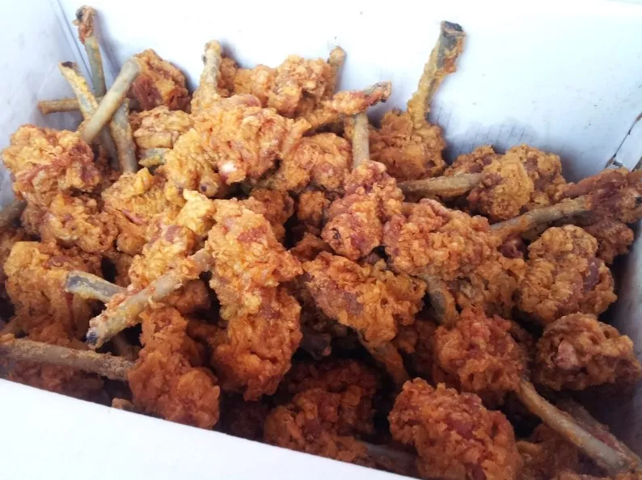
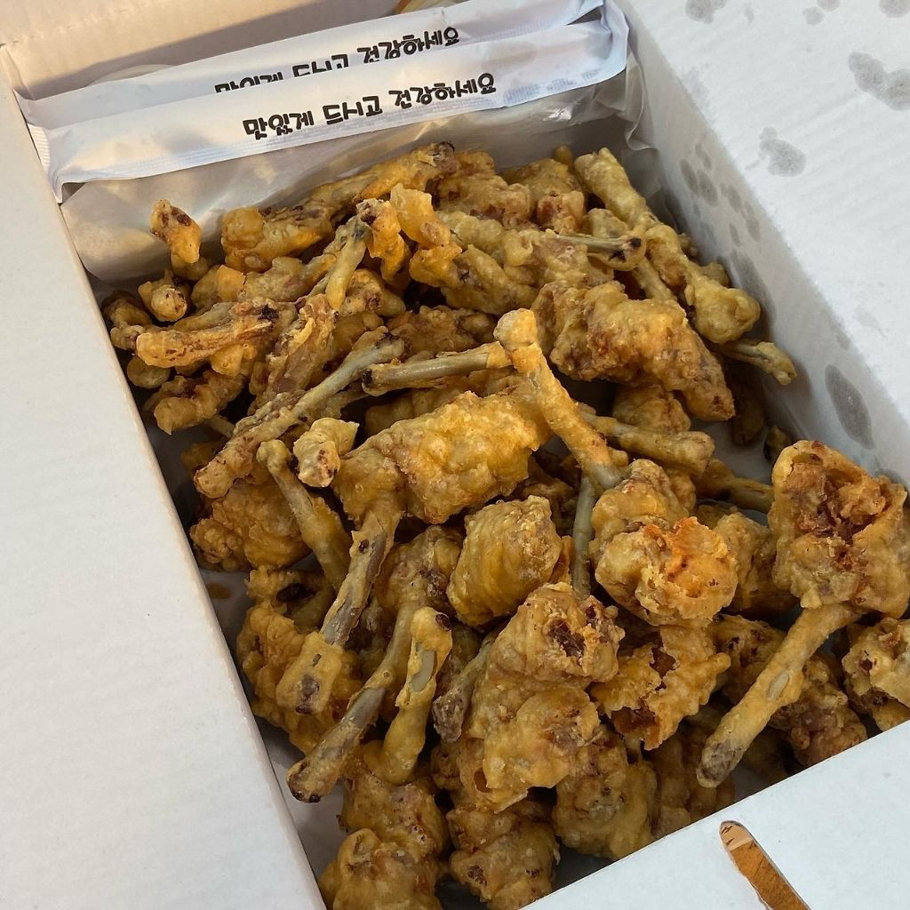
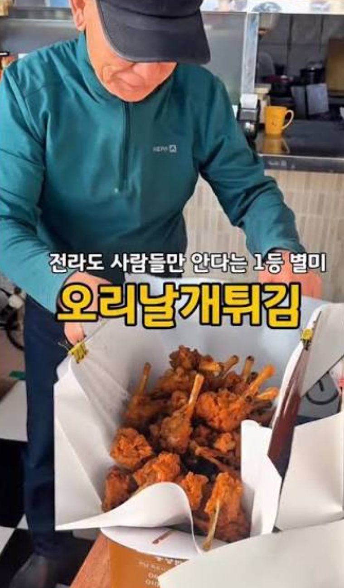
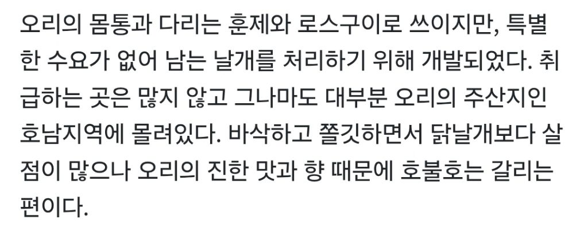

https://cafe.daum.net/ssaumjil/LnOm/3369967?svc=cafeapi




https://cafe.daum.net/ssaumjil/LnOm/3369967?svc=cafeapi




이런게 존나 맛있었으면 전국팔도에 이미 싹 깔렸음
오리탕 오리도 별론데 저게 맛있을리가...
서울에서 깨치킨 찾아보는데 없드라
전북지역가서 치킨 땡기면 먹어보셈
진짜 맛있는데
우리동네에서 시장통닭하면 깨치킨인데 위에 사진이랑 느낌 닮았음
익산이 유명하지
솜리치킨? 깨통닭이라고 잘나간다던데 익산출신이라고 들었어 예전에 집근처에 생겨서 먹었는데 나쁘지않더라
프차화 해서 타지에도 분점 많이 있는곳은 솜리치킨
본점이랑 익산 내 분점, 인근지역에 한두개 있는건 제일치킨
제일치킨 지도에 메모해놔야겠다 땡큐용
처런건 뼈쪽이 완전 고온으로 조리되면 그냥 과자같아서 개맛있음
뼈통닭 생각나네
첨보는데 ㅋㅋ
KFC 먹고싶다
첨보내